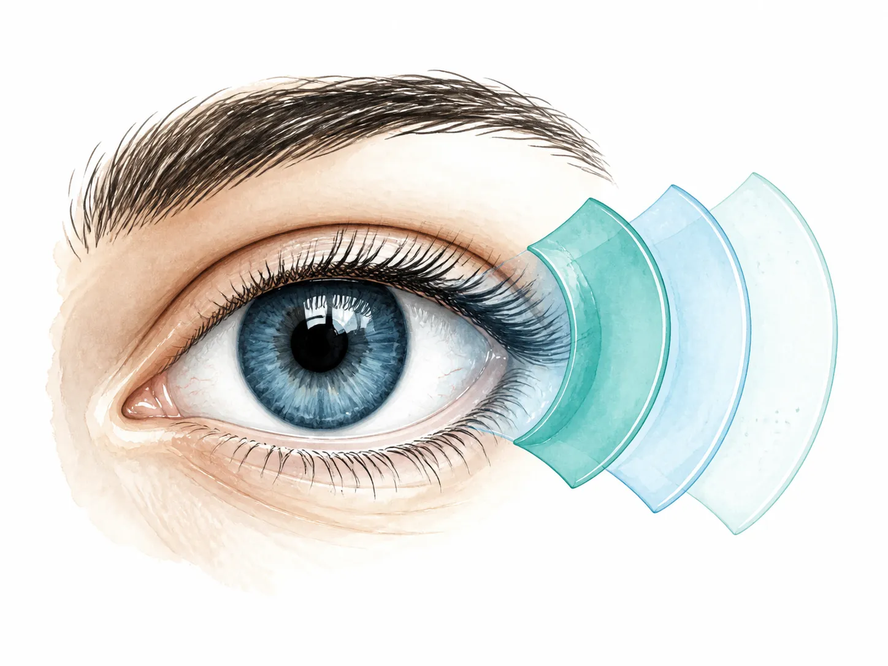

Olho seco • Superfície ocular • Ciência
Entenda o olho seco. Acompanhe a evolução da superfície ocular.
Informação baseada em evidências para quem convive com sintomas de olho seco e para profissionais que acompanham a evolução do diagnóstico, da tecnologia e do tratamento da superfície ocular.
LivrosRevistaEvidênciasTecnologia

03
Camadas interdependentes contribuem para estabilidade, proteção e qualidade óptica da superfície ocular.